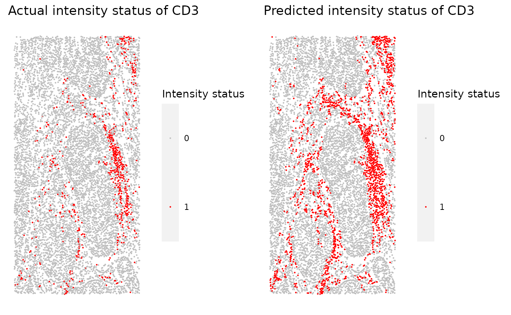

Takes in the returned dataframe from marker_threshold_plot and generates a .pdf file containing scatter plots of actual intensity and predicted intensity for every marker.
marker_prediction_plot(predicted_data, marker)
Arguments
| predicted_data | Output from predict_phenotypes |
|---|---|
| marker | Marker to plot |
Value
A plot is returned
Examples
predicted_image <- predict_phenotypes(SPIAT::formatted_image, thresholds = NULL, tumour_marker = "AMACR", baseline_markers = c("CD3", "CD4", "CD8"))#> [1] "For CD3:" #> [1] "TP:660 TN:6646 FP:1098 FN:9"#> [1] "For PDL-1:" #> [1] "TP:2 TN:8182 FP:227 FN:2"#> [1] "For CD4:" #> [1] "TP:410 TN:7472 FP:429 FN:102"#> [1] "For CD8:" #> [1] "TP:138 TN:7639 FP:636 FN:0"#> [1] "For AMACR:" #> [1] "TP:4359 TN:3950 FP:17 FN:87"marker_prediction_plot(predicted_image, marker="CD3")